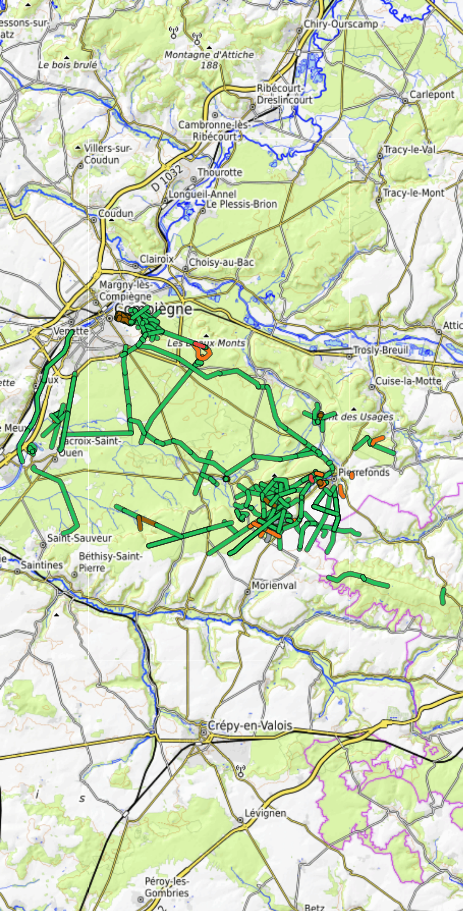
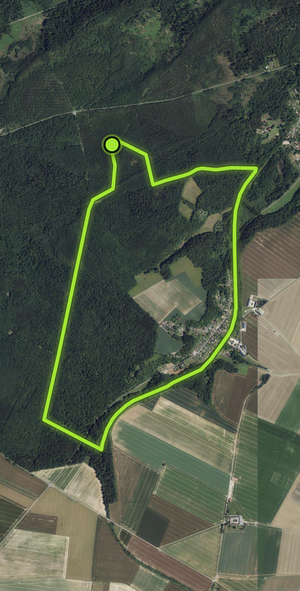
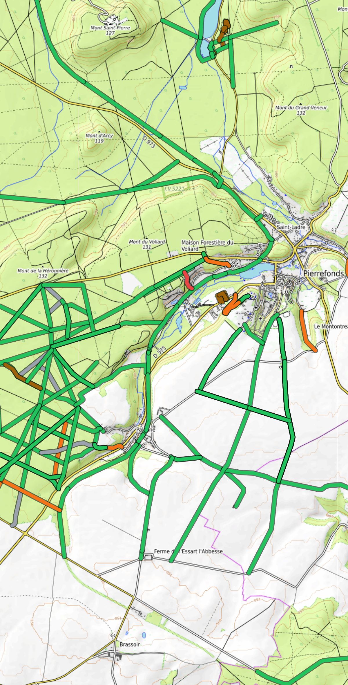

Chaque sentier de Compiègne est parcouru, noté et coloré selon sa difficulté réelle — par des randonneurs, pas par un algorithme.

Tu dis d'où tu pars et combien de kilomètres tu veux. BWR construit la boucle — départ = arrivée, et jamais le même chemin au retour.

En forêt de Compiègne, ton téléphone ne capte pas. BWR télécharge la carte avant que tu partes : les sentiers, leur difficulté et ton itinéraire restent affichés, même sans une seule barre.
Un arbre en travers, un chemin inondé, de la boue jusqu'aux chevilles ? Trois secondes pour le signaler — et tous les autres randonneurs le voient.

Pas d'appli à installer, pas de carte bancaire, pas de pub. Tu ouvres l'adresse dans ton navigateur et tu marches.